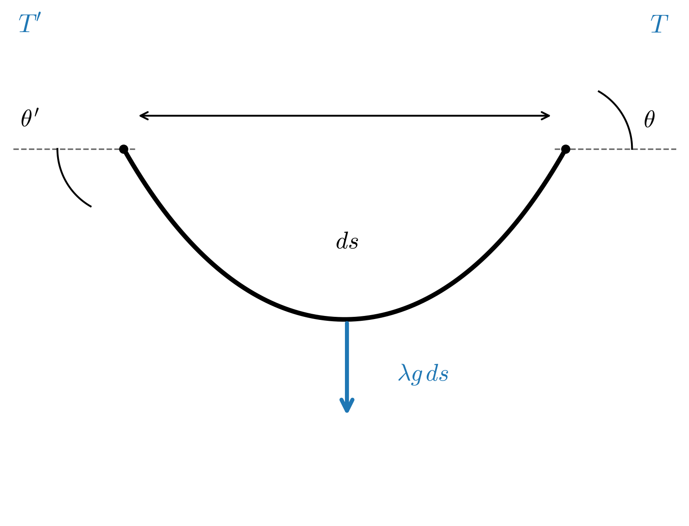
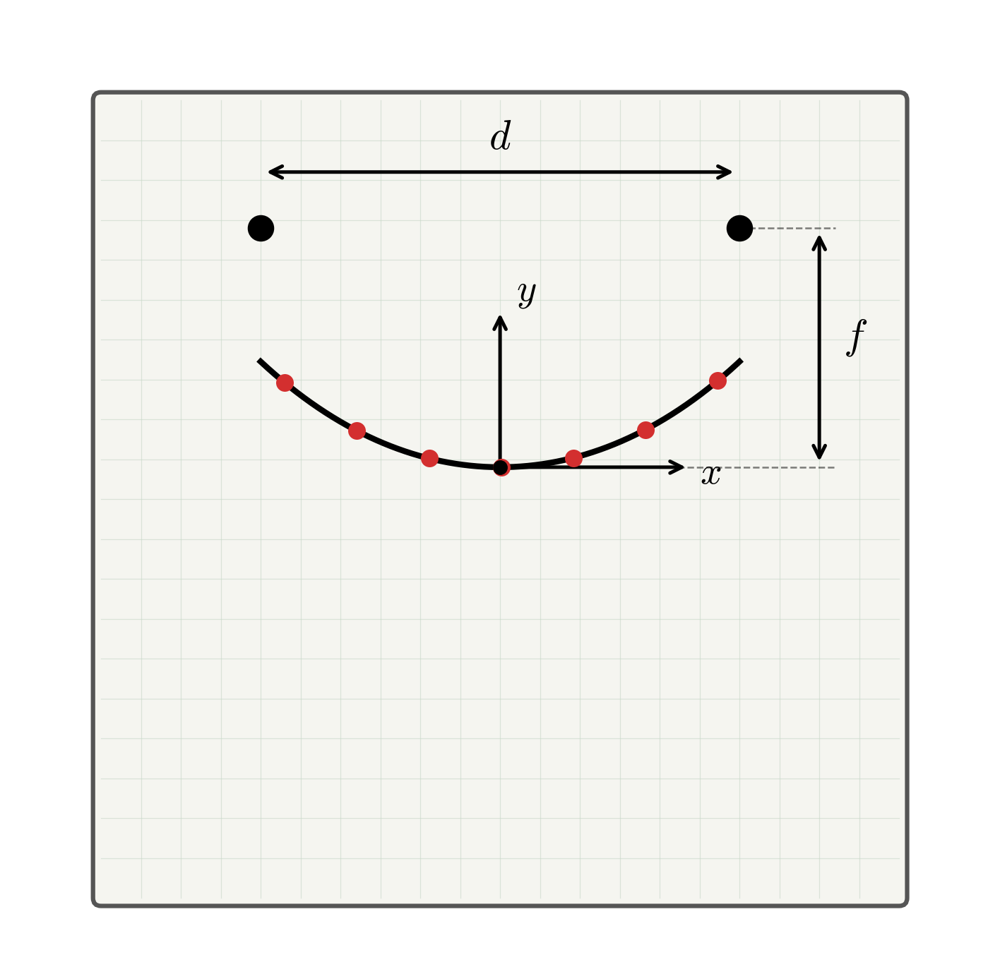
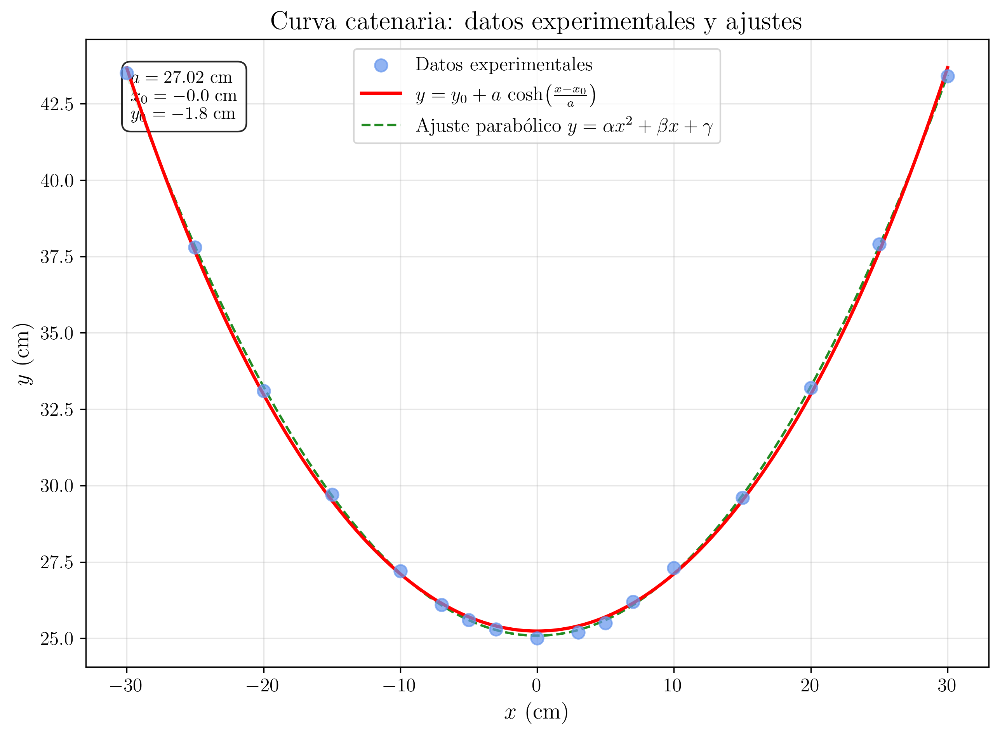

Laboratorio de Mecánica — UNED
2026-03-20
Verificación experimental de la ecuación de la catenaria, y = a\cosh(x/a), como curva de equilibrio de un hilo flexible bajo la acción de la gravedad. Determinación del parámetro de la catenaria y comparación con la aproximación parabólica.
Verificar experimentalmente que la forma de equilibrio de un hilo flexible, inextensible y de densidad uniforme, suspendido de dos puntos fijos bajo la acción de la gravedad, es una catenaria. Determinar el parámetro de la catenaria y comparar el ajuste \cosh con un ajuste parabólico.
Consideremos un hilo flexible, inextensible, homogéneo, de densidad lineal \lambda (masa por unidad de longitud), suspendido de dos puntos fijos A y B bajo la acción de la gravedad. Se desea encontrar la curva que adopta el hilo en equilibrio.
Para ello, se estudia el equilibrio de un elemento infinitesimal de hilo de longitud ds. Sobre dicho elemento actúan tres fuerzas: la tensión \vec{T} en el extremo derecho, la tensión \vec{T}' en el extremo izquierdo (ambas tangentes al hilo) y el peso d\vec{P} = \lambda g\, ds dirigido verticalmente hacia abajo.

Proyectando las ecuaciones de equilibrio sobre los ejes horizontal y vertical, se obtiene:
T \cos\theta = T_0 = \text{cte} \tag{1}
donde T_0 es la componente horizontal de la tensión, que es constante a lo largo de todo el hilo, y
T \sin\theta = \lambda g\, s \tag{2}
donde s es la longitud de arco medida desde el punto más bajo de la curva.
Dividiendo la ecuación Ecuación 2 entre la ecuación Ecuación 1:
\tan\theta = \frac{\lambda g\, s}{T_0} \tag{3}
Dado que \tan\theta = \dfrac{dy}{dx} y que ds = \sqrt{1 + \left(\dfrac{dy}{dx}\right)^2}\, dx, se puede plantear la ecuación diferencial que, una vez resuelta, conduce a la ecuación de la catenaria:
\boxed{y = a\,\cosh\left(\frac{x}{a}\right)} \tag{4}
donde el parámetro a viene dado por:
\boxed{a = \frac{T_0}{\lambda\, g}} \tag{5}
El parámetro a tiene unidades de longitud y representa la distancia vertical desde el origen de coordenadas (situado a una distancia a por debajo del punto más bajo del hilo) hasta dicho punto más bajo. Físicamente, a depende de la tensión horizontal T_0, de la densidad lineal \lambda y de la aceleración de la gravedad g.
Aproximación parabólica
Para pequeñas flechas (poca curvatura), es decir cuando x/a \ll 1, se puede desarrollar el \cosh en serie de Taylor:
\cosh\left(\frac{x}{a}\right) \approx 1 + \frac{1}{2}\left(\frac{x}{a}\right)^2 + \cdots
Con lo que la catenaria se aproxima a una parábola:
y \approx a + \frac{x^2}{2a}
Esta aproximación es válida cuando la relación entre la flecha f (distancia vertical entre el punto más bajo y los apoyos) y la luz d (distancia horizontal entre apoyos) cumple f/d \lesssim 0{,}1. Para valores mayores, la diferencia entre la catenaria y la parábola se hace apreciable.
El montaje experimental consta de un tablero vertical sobre el cual se fija un papel milimetrado. En la parte superior del tablero se disponen dos puntos de sujeción separados una distancia d. De estos puntos se suspende una cadena metálica de densidad lineal uniforme \lambda, que adopta la forma de catenaria bajo la acción de su propio peso. Una plomada y un nivel permiten asegurar la verticalidad y horizontalidad de los ejes de referencia. La posición de diversos puntos de la cadena se marca sobre el papel milimetrado para su posterior análisis.

1
Medir y anotar la longitud total de la cadena, L, y su masa, M, utilizando la cinta métrica y la balanza, respectivamente. Calcular la densidad lineal \lambda = M/L.
Datos de la cadena:
- Longitud total: L = 1{,}00 m
- Masa total: M = 48{,}5 g
- Densidad lineal: \lambda = M/L = 0{,}0485 kg/m
2
Fijar los dos puntos de suspensión sobre el tablero a una distancia d \approx 60 cm, a la misma altura. Verificar con el nivel que ambos puntos están a la misma altura y con la plomada que el tablero está vertical. Colgar la cadena de los dos puntos de sujeción.
3
Elegir un sistema de referencia con el eje x horizontal y el eje y vertical hacia arriba. Es conveniente situar el origen en el punto más bajo de la cadena.
4
Marcar sobre el papel milimetrado la posición de al menos 15 puntos a lo largo de la cadena, midiendo las coordenadas (x, y) de cada punto.
Notas:
Tomar puntos distribuidos a lo largo de toda la cadena, con mayor densidad de puntos en las zonas de mayor curvatura (cerca de los extremos).
Utilizar la plomada para asegurar que las medidas de x son horizontales y las de y son verticales.
Datos
experimentales
A continuación en la tabla se resumen los datos recogidos en el laboratorio.
| Punto | x (cm) | y (cm) |
|---|---|---|
| 1 | -30,0 | 43,1 |
| 2 | -26,0 | 38,7 |
| 3 | -22,0 | 35,2 |
| 4 | -18,0 | 31,9 |
| 5 | -14,0 | 29,2 |
| 6 | -10,0 | 27,1 |
| 7 | -6,0 | 25,8 |
| 8 | -3,0 | 25,2 |
| 9 | 0,0 | 25,0 |
| 10 | 3,0 | 25,2 |
| 11 | 6,0 | 25,7 |
| 12 | 10,0 | 27,0 |
| 13 | 14,0 | 29,3 |
| 14 | 18,0 | 32,0 |
| 15 | 22,0 | 35,0 |
| 16 | 26,0 | 38,9 |
| 17 | 30,0 | 43,2 |
5
Representar gráficamente los puntos experimentales (x, y).
Representación gráfica: y vs x
Representar los datos de la tabla en un gráfico y frente a x. La nube de puntos debe presentar la forma característica de una catenaria (curva en forma de U).

Análisis completo de los datos: ajuste cosh, ajuste parabólico y comparación
1. Ajuste no lineal a la catenaria
Se ajustan los N=17 puntos experimentales (x_i, y_i) a la función teórica de la catenaria:
y = a\,\cosh\!\left(\frac{x}{a}\right)
mediante un algoritmo de regresión no lineal (por ejemplo, Levenberg-Marquardt), minimizando la suma de los cuadrados de los residuos:
S = \sum_{i=1}^{N}\left[y_i - a\,\cosh\!\left(\frac{x_i}{a}\right)\right]^{2}
Con los datos de la tabla, el resultado del ajuste es:
\boxed{a_{\cosh} = 24{,}8 \pm 0{,}3 \textrm{ cm}}
El coeficiente de determinación del ajuste es:
R^{2} = 0{,}9998
lo que indica un ajuste excelente. La catenaria describe con gran fidelidad la forma de la cadena.
2. Ajuste parabólico (aproximación para x/a \ll 1)
Se ajustan los datos a la aproximación parabólica de la catenaria. Recordando que, para x/a pequeño:
y \approx a + \frac{x^{2}}{2a}
esta expresión puede reescribirse en la forma de un ajuste linealizado. Si se define la función parabólica como:
y = \alpha + \beta\, x^{2}
la comparación con la ecuación física y \approx a + \dfrac{1}{2a}\, x^{2} permite identificar:
- La ordenada en el origen, \alpha, con el parámetro: \alpha = a.
- El coeficiente cuadrático, \beta, con: \beta = \dfrac{1}{2a}.
Este ajuste sí es una regresión lineal: basta definir la variable auxiliar X = x^{2} y ajustar y = \alpha + \beta X, que tiene la estructura y = n + m\cdot X. Se aplican las fórmulas estándar de la regresión lineal para obtener la pendiente (m = \beta) y la ordenada en el origen (n = \alpha), junto con sus errores \Delta\beta y \Delta\alpha.
Con los datos de la tabla:
\alpha = 25{,}1 \pm 0{,}2 \textrm{ cm} \qquad;\qquad \beta = 0{,}0203 \pm 0{,}0005 \textrm{ cm}^{-1}
El coeficiente de determinación es:
R^{2} = 0{,}9991
Obtención de a a partir de \beta:
De la relación \beta = \dfrac{1}{2a}, se despeja:
\boxed{a_{\textrm{parábola}} = \frac{1}{2\beta}}
Numéricamente:
a_{\textrm{parábola}} = \frac{1}{2 \times 0{,}0203} = 24{,}6 \textrm{ cm}
Propagación del error:
Dado que a = \dfrac{1}{2\beta} es una función de una sola variable \beta, el error se propaga como:
\Delta a = \left|\frac{da}{d\beta}\right| \cdot |\Delta\beta| = \left|\frac{-1}{2\beta^{2}}\right| \cdot |\Delta\beta| = \frac{\Delta\beta}{2\beta^{2}}
Sustituyendo valores:
\Delta a = \frac{0{,}0005}{2 \times (0{,}0203)^{2}} = \frac{0{,}0005}{0{,}000824} \approx 0{,}6 \textrm{ cm}
Por lo tanto:
\boxed{a_{\textrm{parábola}} = 24{,}6 \pm 0{,}6 \textrm{ cm}}
3. Comparación de los ajustes
Ajuste a (cm) R^{2} Catenaria (\cosh) 24{,}8 \pm 0{,}3 0{,}9998 Parábola 24{,}6 \pm 0{,}6 0{,}9991 Se observa que:
- Ambos ajustes proporcionan valores de a compatibles dentro del error experimental.
- El ajuste \cosh es superior al parabólico (R^{2} mayor), como se espera: la catenaria es la solución exacta, mientras que la parábola es solo una aproximación.
- La diferencia se manifiesta especialmente en los puntos extremos (|x| = 30 cm), donde x/a \approx 1{,}2 y la aproximación \cosh(u) \approx 1 + u^{2}/2 ya no es precisa.
4. Comparación con el valor teórico
El parámetro de la catenaria viene dado teóricamente por la ecuación Ecuación 5:
a_{\textrm{teórico}} = \frac{T_{0}}{\lambda\, g}
La tensión horizontal se puede estimar a partir del valor experimental de a:
T_{0} = \lambda\, g\, a = 0{,}0485 \times 9{,}81 \times 0{,}248 \approx 0{,}118 \textrm{ N}
Este valor de T_{0} es autoconsistente: al sustituir de vuelta en la expresión teórica se recupera a \approx 24{,}8 cm.
También se puede verificar numéricamente con la condición geométrica (L = 1{,}00 m, d = 0{,}60 m):
\frac{L}{2} = a\,\sinh\!\left(\frac{d}{2a}\right) \Rightarrow 0{,}50 = a\,\sinh\!\left(\frac{0{,}30}{a}\right)
Resolviendo numéricamente esta ecuación trascendente se obtiene a \approx 0{,}25 m = 25 cm, valor coherente con el obtenido del ajuste experimental.
Resumen de resultados:
\boxed{a_{\cosh} = 24{,}8 \pm 0{,}3 \textrm{ cm} \qquad;\qquad a_{\textrm{parábola}} = 24{,}6 \pm 0{,}6 \textrm{ cm} \qquad;\qquad a_{\textrm{teórico}} \approx 25 \textrm{ cm}}
Los tres valores son compatibles dentro de las incertidumbres, lo que confirma la validez del modelo teórico de la catenaria.
6
Realizar un ajuste por mínimos cuadrados de los datos experimentales a la función catenaria:
y = a\,\cosh\left(\frac{x - x_0}{a}\right) + y_0
donde a, x_0 e y_0 son los parámetros de ajuste. El parámetro a es el parámetro de la catenaria, x_0 tiene en cuenta un posible descentrado del origen y y_0 es la ordenada del punto más bajo.
Determinar el valor del parámetro a y su error \Delta a.
Obtener el coeficiente de determinación R^2 del ajuste.
Comentarios sobre el ajuste cosh
El ajuste se realiza mediante un algoritmo de regresión no lineal (por ejemplo, Levenberg-Marquardt) minimizando la suma de los cuadrados de los residuos:
S = \sum_{i=1}^{N} \left[ y_i - a\,\cosh\left(\frac{x_i - x_0}{a}\right) - y_0 \right]^2
Con los datos proporcionados, el valor esperado del parámetro de la catenaria es del orden de a \approx 25 cm. Este valor se puede comparar con el valor teórico obtenido a partir de la ecuación Ecuación 5:
a_{\text{teórico}} = \frac{T_0}{\lambda\, g}
Para estimar T_0, se puede utilizar la relación geométrica entre la longitud de la cadena L, la distancia entre apoyos d y el parámetro a:
\frac{L}{2} = a\,\sinh\left(\frac{d}{2a}\right)
7
Realizar un segundo ajuste por mínimos cuadrados de los datos experimentales a una función parabólica:
y = A\, x^2 + B\, x + C
Determinar los parámetros A, B y C con sus errores.
Obtener el coeficiente de determinación R^2 del ajuste parabólico.
Comparar el parámetro a del ajuste cosh con el correspondiente valor deducido del ajuste parabólico, teniendo en cuenta que A = \dfrac{1}{2a}.
Comparación entre el ajuste cosh y el ajuste parabólico
Para comparar ambos ajustes de forma cuantitativa, calcular los residuos de cada ajuste:
r_i^{\text{cosh}} = y_i - y_{\text{cosh}}(x_i) \hspace{2cm} r_i^{\text{par}} = y_i - y_{\text{par}}(x_i)
Representar gráficamente ambos conjuntos de residuos frente a x. Si la catenaria describe mejor la curva que la parábola, los residuos del ajuste cosh serán sistemáticamente menores que los del ajuste parabólico, especialmente en los extremos de la cadena (donde x/a es mayor y la aproximación parabólica deja de ser válida).
Comparar también los valores de R^2 de ambos ajustes.
8
Comparar el valor de a obtenido del ajuste con el valor teórico a = T_0/(\lambda g).
Para ello, estimar T_0 a partir de los datos experimentales utilizando la relación:
T_0 = \lambda\, g\, a
y verificar la coherencia del resultado.
Cálculo del parámetro a teórico
A partir de la ecuación Ecuación 5, se tiene:
a = \frac{T_0}{\lambda\, g}
El valor de T_0 se puede obtener a partir de la condición geométrica. Para una catenaria con apoyos a la misma altura, separados una distancia d, y con una longitud de hilo L, se cumple:
\frac{L}{2} = a\,\sinh\left(\frac{d}{2a}\right)
Esta ecuación trascendente se resuelve numéricamente para obtener a. Con L = 1{,}00 m y d = 0{,}60 m:
0{,}50 = a\,\sinh\left(\frac{0{,}30}{a}\right)
Resolviendo numéricamente se obtiene a \approx 0{,}25 m, lo cual es coherente con el valor obtenido del ajuste experimental.
Una vez conocido a, la tensión horizontal es:
T_0 = \lambda\, g\, a = 0{,}0485 \times 9{,}81 \times 0{,}25 \approx 0{,}119 \textrm{ N}
E1
Comparar el valor del parámetro a obtenido del ajuste experimental con el valor teórico a = T_0/(\lambda g), calculando la discrepancia porcentual.
E2
Representar gráficamente los residuos del ajuste \cosh y los residuos del ajuste parabólico en la misma gráfica. Comentar si se observan diferencias sistemáticas y en qué zonas de la curva son más apreciables.
E3
Citar al menos 3 aplicaciones de ingeniería en las que la curva catenaria desempeñe un papel fundamental. Para cada una, explicar brevemente por qué la forma de catenaria es relevante.
Aplicaciones de la catenaria en ingeniería
Catenaria de líneas eléctricas y ferroviarias: los cables de las líneas de transmisión eléctrica y de alimentación de trenes adoptan la forma de una catenaria bajo su propio peso. El diseño del tendido debe tener en cuenta el parámetro a para calcular la flecha máxima y la tensión mecánica en los cables.
Arcos catenarios en arquitectura: un arco con forma de catenaria invertida trabaja exclusivamente a compresión, sin momentos flectores. Ejemplos históricos incluyen el Gateway Arch de San Luis (Misuri) y las bóvedas de Antonio Gaudí.
Diseño de cadenas y cables de puentes colgantes: aunque en los puentes colgantes la carga del tablero distribuida uniformemente produce una parábola (no una catenaria), el cable sin carga adopta forma de catenaria. La distinción entre ambas curvas es fundamental en el cálculo estructural.
Ejercicios Previos
- Derivar la ecuación de la catenaria a partir del equilibrio de un elemento infinitesimal de hilo. Esto es, partiendo de las ecuaciones de equilibrio Ecuación 1 y Ecuación 2, obtener la ecuación Ecuación 4.
Solución del ejercicio 1
Partiendo de las ecuaciones de equilibrio:
T\cos\theta = T_0 \hspace{2cm} T\sin\theta = \lambda g\, s
Dividiendo miembro a miembro:
\tan\theta = \frac{\lambda g\, s}{T_0} = \frac{s}{a}
donde se ha definido a = T_0/(\lambda g). Como \tan\theta = dy/dx:
\frac{dy}{dx} = \frac{s}{a}
Derivando respecto de x:
\frac{d^2 y}{dx^2} = \frac{1}{a}\frac{ds}{dx} = \frac{1}{a}\sqrt{1 + \left(\frac{dy}{dx}\right)^2}
donde se ha utilizado que ds = \sqrt{1 + (dy/dx)^2}\, dx.
Sea p = dy/dx. Entonces:
\frac{dp}{dx} = \frac{1}{a}\sqrt{1 + p^2}
Separando variables e integrando:
\int \frac{dp}{\sqrt{1+p^2}} = \int \frac{dx}{a} \Rightarrow \sinh^{-1}(p) = \frac{x}{a} + C_1
Con la condición de contorno p = dy/dx = 0 en x = 0 (punto más bajo), se obtiene C_1 = 0. Por tanto:
\frac{dy}{dx} = \sinh\left(\frac{x}{a}\right)
Integrando de nuevo:
y = a\,\cosh\left(\frac{x}{a}\right) + C_2
Eligiendo el origen de forma que y(0) = a, se obtiene C_2 = 0 y la ecuación de la catenaria:
\boxed{y = a\,\cosh\left(\frac{x}{a}\right)}
- ¿Para qué valores de la relación flecha/luz es válida la aproximación parabólica? Justificar la respuesta comparando los desarrollos en serie del \cosh.
Solución del ejercicio 2
El desarrollo en serie de Taylor del coseno hiperbólico es:
\cosh(u) = 1 + \frac{u^2}{2} + \frac{u^4}{24} + \cdots
La aproximación parabólica consiste en truncar la serie en el término cuadrático. El error relativo de esta aproximación viene dado por el cociente entre el primer término despreciado y el último retenido:
\varepsilon \approx \frac{u^4/24}{u^2/2} = \frac{u^2}{12}
donde u = x/a. En el punto de apoyo, u_{\max} = d/(2a).
La flecha f es la diferencia de altura entre el punto de apoyo y el punto más bajo:
f = a\,\cosh\left(\frac{d}{2a}\right) - a \approx \frac{d^2}{8a}
(en la aproximación parabólica). Por lo tanto:
\frac{f}{d} \approx \frac{d}{8a} \Rightarrow u_{\max} = \frac{d}{2a} \approx 4\frac{f}{d}
Para que el error sea inferior al 1,:
\frac{u_{\max}^2}{12} < 0{,}01 \Rightarrow u_{\max} < 0{,}35 \Rightarrow \frac{f}{d} < 0{,}09
\boxed{\text{La aproximación parabólica es válida para } f/d \lesssim 0{,}1}
- ¿De qué depende el parámetro a y cuáles son sus unidades?
Solución del ejercicio 3
El parámetro a viene dado por la ecuación Ecuación 5:
a = \frac{T_0}{\lambda\, g}
Depende de:
- T_0: la componente horizontal de la tensión en el hilo (en N).
- \lambda: la densidad lineal del hilo (masa por unidad de longitud, en kg/m).
- g: la aceleración de la gravedad (en m/s^2).
Sus unidades son:
[a] = \frac{\textrm{N}}{\frac{\textrm{kg}}{\textrm{m}} \cdot \frac{\textrm{m}}{\textrm{s}^2}} = \frac{\textrm{kg}\cdot\frac{\textrm{m}}{\textrm{s}^2}}{\frac{\textrm{kg}}{\textrm{s}^2}} = \textrm{m}
\boxed{[a] = \textrm{m (unidades de longitud)}}
Físicamente, un valor grande de a corresponde a un hilo poco curvado (mucha tensión o poca densidad lineal), mientras que un valor pequeño de a corresponde a un hilo muy curvado (poca tensión o mucha densidad lineal).
- Si se duplica la masa del hilo manteniendo la misma longitud y distancia entre apoyos, ¿cómo cambia la forma de la catenaria?
Solución del ejercicio 4
Si se duplica la masa manteniendo la misma longitud L, la densidad lineal se duplica: \lambda' = 2\lambda.
La forma de la catenaria viene determinada por la ecuación Ecuación 4:
y = a\,\cosh\left(\frac{x}{a}\right)
donde a = T_0/(\lambda g). La condición geométrica (misma longitud L y misma distancia entre apoyos d) impone:
\frac{L}{2} = a\,\sinh\left(\frac{d}{2a}\right)
Como L y d no cambian, el parámetro a tampoco cambia. Esto significa que la forma de la catenaria no cambia.
Lo que sí cambia es la tensión horizontal, ya que:
T_0' = \lambda'\, g\, a = 2\lambda\, g\, a = 2\, T_0
\boxed{\text{La forma no cambia, pero la tensión se duplica.}}
Este resultado es físicamente razonable: la forma de la catenaria depende únicamente de la geometría (L y d), no de la masa o la densidad lineal. La densidad lineal solo afecta a las fuerzas internas (tensiones) en el hilo.
UPM — Capítulo 14: Estática de hilos. http://w3.mecánica.upm.es/~goico/mecánica/libro/cap14.pdf
EHU/UPV — La curva catenaria. http://www.sc.ehu.es/sbweb/fisica3/sólido/catenaria/catenaria.html
Universitat de Valencia, C. Ivorra — La catenaria. https://www.uv.es/~ivorra/Libros/Catenaria.pdf
arXiv:1809.07047 — The catenary: an ancient problem on the computer screen.
Universidad de Cantabria — Cables. https://ocw.unican.es/pluginfile.php/2240/course/section/2137/04-Cables.pdf